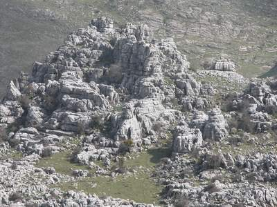
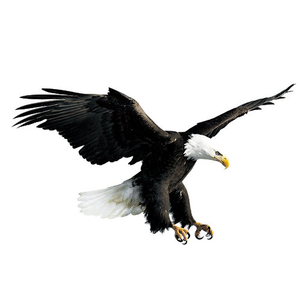
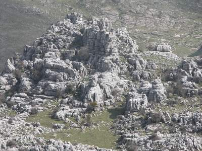
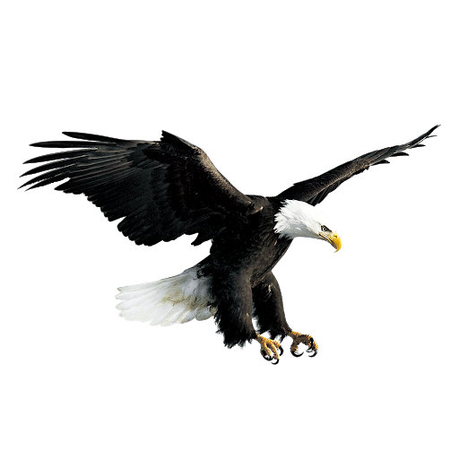

ÁGUILA
 



Descripción
Las águilas representan el pináculo de la evolución aviar como depredadores aéreos, pertenecientes a la familia Accipitridae. Estas majestuosas rapaces dominan los cielos con su imponente envergadura alar que puede superar los 2.5 metros en las especies más grandes como el águila harpía.
Su diseño aerodinámico combina potencia y elegancia, con cuerpos robustos adaptados para la caza y vuelos de gran altitud. Existen más de 60 especies distribuidas globalmente, desde las gélidas tundras árticas hasta las selvas tropicales, cada una perfectamente adaptada a su entorno ecológico particular.
Distribución y hábitat
Las águilas muestran una distribución cosmopolita, ausentes solo en la Antártida y algunas islas oceánicas remotas. El águila real (Aquila chrysaetos) ocupa extensas áreas montañosas del hemisferio norte, desde las Rocallosas americanas hasta los Alpes europeos y las estepas asiáticas.
Su prima cercana, el águila imperial ibérica (Aquila adalberti), se restringe a los bosques mediterráneos de la Península Ibérica, siendo uno de los rapaces más emblemáticos de Europa. En las selvas neotropicales, el águila harpía (Harpia harpyja) reina como el depredador aéreo más poderoso, mientras que el águila calva (Haliaeetus leucocephalus) prefiere ambientes acuáticos cerca de costas y grandes ríos en Norteamérica.
Estos hábitats variados comparten características comunes: abundancia de presas, posaderos elevados para vigilancia y territorios extensos sin perturbación humana significativa.
Alimentación
Como superdepredadores aéreos, las águilas ocupan la cima de la pirámide trófica. Su dieta refleja una notable adaptación a los recursos disponibles en cada ecosistema.
Las águilas de zonas montañosas como la real se especializan en mamíferos medianos (marmotas, liebres, incluso crías de venado), mientras que las especies forestales como la harpía cazan principalmente primates y perezosos en el dosel selvático.
Las águilas pescadoras, representadas por el género Ichthyophaga en Asia y África, han desarrollado garras especializadas para extraer peces de aguas superficiales.
Su técnica de caza combina vuelos de reconocimiento a gran altura, donde su aguda visión les permite detectar presas a kilómetros de distancia, seguidos de picados que pueden superar los 200 km/h en algunas especies. La potencia de sus garras (que ejercen presión varias veces superior a la mordida de un lobo) les permite matar instantáneamente incluso a presas grandes.
Características físicas
La morfología del águila representa la perfección evolutiva para la depredación aérea. Su esqueleto ligero pero extremadamente resistente representa menos del 10% de su peso total, permitiendo vuelos prolongados sin sacrificar fuerza.
El sistema visual es particularmente notable: con una densidad de fotorreceptores retinales cinco veces mayor que la humana, pueden detectar un conejo a 3 km de distancia, además de poseer visión tetracromática que incluye el espectro ultravioleta. Sus alas anchas y profundamente digitadas proporcionan sustentación incluso en corrientes térmicas débiles, mientras que el diseño aerodinámico de las plumas remeras reduce la turbulencia.
El pico ganchudo, compuesto de queratina dura, actúa como eficaz herramienta de despiece, capaz de desarticular presas con precisión quirúrgica. Las patas emplumadas hasta los dedos en especies de clima frío funcionan como aislantes térmicos, mientras que las garras curvadas (especialmente el dedo posterior oponible) forman tenazas mortíferas que pueden ejercer presiones de más de 200 psi.
Comportamiento
La etología de las águilas revela complejos patrones de conducta. La mayoría de especies son territoriales y solitarias, excepto durante la época reproductiva.
Algunas, como el águila calva, muestran cierto grado de sociabilidad en áreas con abundancia de alimento, congregándose en dormideros comunales durante el invierno. Su sistema de comunicación incluye vocalizaciones territoriales (el característico chillido agudo que muchas películas atribuyen erróneamente al halcón peregrino) y un elaborado lenguaje corporal durante el cortejo, que incluye espectaculares vuelos en tándem y demostraciones aéreas.
La memoria espacial les permite recordar la ubicación de fuentes de alimento estacionales y territorios de caza que pueden abarcar cientos de kilómetros cuadrados. Estudios recientes han demostrado capacidad para resolver problemas complejos, como desarticular presas en posiciones específicas para facilitar su transporte.
Reproducción
La reproducción en las águilas es un proceso exigente que refleja su estrategia vital K-seleccionada. Las parejas, generalmente monógamas y longevas (algunas permanecen juntas más de 20 años), realizan elaborados rituales de cortejo que refuerzan el vínculo de pareja.
Los nidos, llamados harpías, son estructuras masivas que pueden superar los 2 metros de diámetro y pesar media tonelada, siendo reutilizados y ampliados año tras año. La puesta, normalmente de 1-3 huevos (dependiendo de la disponibilidad trófica), es incubada principalmente por la hembra durante 35-45 días, mientras el macho provee alimento. El fenómeno de cainismo (donde el hermano mayor mata al menor) es común en especies como el águila real, estrategia evolutiva que asegura la supervivencia del más fuerte cuando los recursos son limitados. Los polluelos permanecen en el nido entre 70-120 días, dependiendo de la especie, recibiendo cuidados parentales incluso después de emplumar mientras perfeccionan sus técnicas de vuelo y caza.
Defensa y depredadores
Las águilas son depredadores tope o superdepredadores en la mayoría de sus ecosistemas. Esto significa que, una vez adultas, prácticamente no tienen depredadores naturales que las cacen como alimento.
Su posición en la cima de la cadena alimentaria se debe a sus impresionantes características ya sea por su vista aguda, garras y pico fuertes, velocidad y agilidad en vuelo, comportamiento territorial, y la protección de sus crías.
Datos curiosos
- El águila arpía posee garras más largas que las de un oso pardo, capaces de ejercer 500 psi de presión.
- Un águila real puede divisar un conejo a 3.2 km de distancia, gracias a una retina con 1 millón de conos por mm².
- Las águilas pescadoras giran sus garras 180° durante el ataque para maximizar la eficiencia de captura.
- El águila filipina es uno de los rapaces más raros, con menos de 400 individuos en libertad.
- Algunas águilas almacenan comida en "neveras naturales" - grietas rocosas donde la baja temperatura preserva las presas.
Estado de conservación
El estado de conservación del "águila" en general es complejo, ya que existen muchas especies diferentes de águilas en el mundo, y cada una tiene su propio estatus según la Unión Internacional para la Conservación de la Naturaleza (UICN). Algunas especies están bien conservadas, mientras que otras enfrentan serias amenazas.